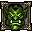
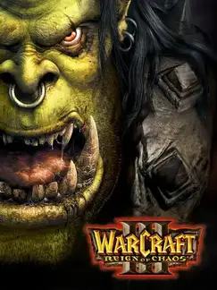

Warcraft III |
|
| Tiempo de juego | 20s |
| Última actividad | 13/11/2025 17:04:38 |
| Añadido | 26/4/2025 1:40:24 |
| Modificado | 10/12/2025 13:55:36 |
| Estado de finalización | Jugado |
| Librería | Playnite |
| Fuente | |
| Plataforma | PC (Windows) |
| Fecha de lanzamiento | 3/7/2002 |
| Puntuación de la Comunidad | 88 |
| Puntuación de la Crítica | 93 |
| Puntuación de usuario | |
| Género | Real Time Strategy (RTS) Strategy |
| Desarrollador | Blizzard Entertainment |
| Editor | Blizzard Entertainment Capcom Sierra Entertainment |
| Característica | Multiplayer Single Player |
| Enlaces | Wikipedia Twitch Wikia + Epic War + WC3 Maps + Hive Workshop |
| Tag | |
Este es el RTS que no solo te puso al mando de ejércitos en un mundo de fantasía épica, sino que cambió las reglas de juego para el género de la estrategia en tiempo real de una forma que resuena hasta hoy. Fue una revolución.
Su campaña es excepcional, narrando una historia épica con un lore exquisito que te atrapa desde el primer momento. Esta narrativa no solo te sumerge en el destino de razas icónicas, sino que sentó las bases y fue el prólogo directo para todo un universo que después exploraste en ese MMORPG gigante que todos conocemos...
La introducción central de héroes y la fusión magistral de RTS y RPG que logró fueron innovaciones que definieron una era. Pero su legado no termina ahí: el poder de su editor de mapas desató la creatividad de la comunidad de formas insospechadas. Las creaciones de los fans, particularmente un mapa específico (el origen de DotA, predecesor de LoL), dieron origen a un género completamente nuevo que domina el multijugador competitivo hoy en día.
A pesar de intentos posteriores de "renovarlo" (como en el infame Reforged), la comunidad y muchos fans consideran que la experiencia original de este juego, con su jugabilidad precisa y su presentación auténtica, sigue siendo la verdadera y la superior, el punto de partida que realmente lo cambió todo y dejó una marca imborrable en la historia de los videojuegos.
El RTS que lo tuvo todo: historia, revolución jugable, comunidad imparable y legado eterno.